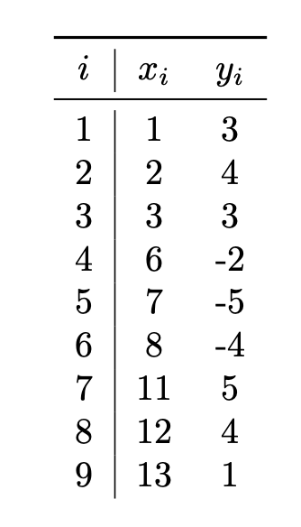
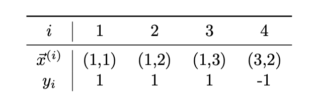
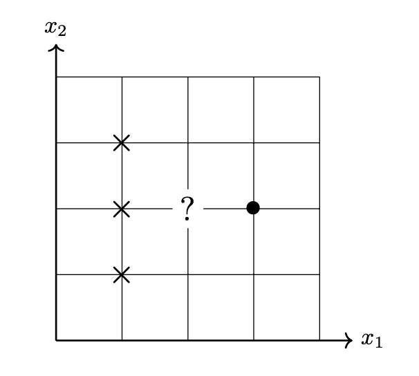

Problems tagged with "kernel ridge regression"
Problem #014
Tags: kernel ridge regression
Let \(\nvec{x}{1} = (1, 2, 0)^T\), \(\nvec{x}{2} = (-1, -1, -1)^T\), \(\nvec{x}{3} = (2, 2, 0)^T\), \(\nvec{x}{4} = (0, 2, 0)\).
Suppose a prediction function \(H(\vec x)\) is learned using kernel ridge regression on the above data set using the kernel \(\kappa(\vec x, \vec x') = (1 + \vec x \cdot\vec x')^2\) and regularization parameter \(\lambda = 3\). Suppose that \(\vec\alpha = (1, 0, -1, 2)^T\) is the solution of the dual problem.
Let \(\vec x = (0, 1, 0)^T\) be a new point. What is \(H(\vec x)\)?
Solution
18
Problem #016
Tags: kernel ridge regression
Let \(\{\nvec{x}{i}, y_i\}\) be a data set of \(n\) points, with each \(\nvec{x}{i}\in\mathbb R^d\). Recall that the solution to the kernel ridge regression problem is \(\vec\alpha = (K + n \lambda I)^{-1}\vec y\), where \(K\) is the kernel matrix, \(I\) is the identity matrix, \(\lambda > 0\) is a regularization parameter, and \(\vec y = (y_1, \ldots, y_n)^T\).
Suppose kernel ridge regression is performed with a kernel \(\kappa\) that is a kernel for a feature map \(\vec\phi : \mathbb R^d \to\mathbb R^k\).
What is the size of the kernel matrix, \(K\)?
Solution
The kernel matrix is of size \(n \times n\).
Problem #030
Tags: kernel ridge regression
Consider the data set: \(\nvec{x}{1} = (1, 0, 2)^T\)\(\nvec{x}{2} = (-1, 0, -1)^T\)\(\nvec{x}{3} = (1, 2, 1)^T\)\(\nvec{x}{4} = (1, 1, 0)^T\) Suppose a prediction function \(H(\vec x)\) is learned using kernel ridge regression on the above data set using the kernel \(\kappa(\vec x, \vec x') = (1 + \vec x \cdot\vec x')^2\) and regularization parameter \(\lambda = 3\). Suppose that \(\vec\alpha = (-1, -2, 0, 2)^T\) is the solution of the dual problem.
Part 1)
What is the (2,3) entry of the kernel matrix?
\(K_{23} = \)
Part 2)
Let \(\vec x = (1, 1, 0)^T\) be a new point. What is \(H(\vec x)\)?
Problem #092
Tags: kernel ridge regression
Suppose Gaussian kernel ridge regression is used to train a model on the following data set of \((x_i, y_i)\) pairs, using a kernel width parameter of \(\gamma = 1\) and a regularization parameter of \(\lambda = 0\):

Let \(\vec\alpha\) be the solution to the dual problem. What will be the sign of \(\alpha_5\)?
Solution
Negative. Video explanation: https://youtu.be/K_1cxeQAkdk
Problem #095
Tags: kernel ridge regression
Suppose a prediction function \(H(\vec x)\) is trained using kernel ridge regression on the data below using regularization parameter \(\lambda = 4\) and kernel \(\kappa(\vec x, \vec x') = (1 + \vec x \cdot\vec x')^2\):
\(\nvec{x}{1} = (1, 2, 0)\), \(y_1 = 1\)\(\nvec{x}{2} = (0, 1, 2)\), \(y_2 = -1\)\(\nvec{x}{3} = (2, 0, 2)\), \(y_3 = 1\)\(\nvec{x}{4} = (1, 0, 1)\), \(y_4 = -1\)\(\nvec{x}{5} = (0, 0, 0)\), \(y_5 = 1\) Suppose the solution to the dual problem is \(\vec\alpha = (2, 0, 1, -1, 2)\).
Consider a new point \(\vec x = (1, 1, 1)\). What is \(H(\vec x)\)?
Solution
Video explanation: https://youtu.be/miyY9BeL0QI
Problem #109
Tags: kernel ridge regression
Consider the following data set of four points whose feature vectors are in \(\mathbb{R}^2\) and whose labels are in \(\{-1,1\}\):

For convenience, we've plotted the data below. Each point is labeled with either the positive class (denoted by \(\times\)) or the negative class (denoted by \(\bullet\)).

Suppose an unnamed kernel classifier \(H(\vec x) = \sum_{i=1}^n \alpha_i \kappa(\nvec{x}{x}, \vec x)\) has been trained on this data using a (spherical) Gaussian kernel and kernel width parameter \(\gamma = 1\). Suppose the solution to the dual problem is found to be \(\vec\alpha = (1, 1, 1, -3)^T\).
What class will the classifier predict for the point \((2,2)\)? For convenience, we've plotted this point on the graph above as a question mark.
Solution
-1 (the \(\bullet\) class).
Problem #112
Tags: kernel ridge regression
Suppose a prediction function \(H(\vec x)\) is trained using kernel ridge regression on the data below using regularization parameter \(\lambda = 4\) and kernel \(\kappa(\vec x, \vec x') = (1 + \vec x \cdot\vec x')^2\):
\(\nvec{x}{1} = (0, 1, 1)\), \(y_1 = 1\)\(\nvec{x}{2} = (1, 1, 1)\), \(y_2 = -1\)\(\nvec{x}{3} = (2, 2, 2)\), \(y_3 = 1\)\(\nvec{x}{4} = (1, 1, 0)\), \(y_4 = -1\)\(\nvec{x}{5} = (0, 1, 0)\), \(y_5 = 1\) Suppose the solution to the dual problem is \(\vec\alpha = (-1, 1, 0, 3, -2)\).
Consider a new point \(\vec x = (2, 0, 1)^T\). What is \(H(\vec x)\)?